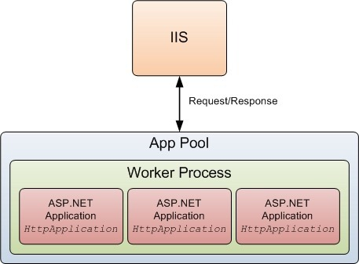
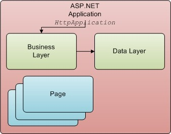

Relationship between IIS and ASP.NET
In IIS your ASP.NET application really runs in an App Pool, or more specifically in a worker process that the App pool creates for your application (Take a look at Figure 1 below). A Worker Process is an application that hosts your ASP.NET application and effectively that is the App Domain in .NET terms.
Figure1
IIS, App Pool and Worker Process
For the purposes of this discussion, I'll treat IIS, App Pool and the Worker Process as one and the same and so you may see me use these synonymously.HttpApplication). From that point on the typical flow of an ASP.NET application takes place (the ASP.NET pipeline). However, what you need to know and understand is that the worker process (think of it as IIS really) keeps the instance of your HttpApplication (an instance of your Global class) alive, in order to field other requests. In fact it by default it would create and cache up to 10 instances of your Global class, if required (Lazy instantiation) depending on load the number of requests your website receives other factors. In Figure1 above the instances of your ASP.NET application are shown as the red boxes. There could be up to 10 of these cached by the worker process. These are really threads that the worker process has created and cached and each thread has its own instance of your Global class. Note that each of these threads is in the same App Domain. So any static classes you may have in your application are shared across each of these threads or application instances. IIS and Request Queuing
If your site is really busy and/or your requests are long running requests and the 10 cached instances are all busy servicing other requests, then when a new request arrives for your application, IIS will queue this request. In fact it will (by default) queue up to 1000 requests in the hope that one of the 10 threads will eventually free up and it can hand the request over to it. Beyond that your site visitors will see a "Server too busy" error.Business Layers and Global
Given the information discussed thus far, lets move on to the matter at hand and that is the strategy we can and should employ in creating instances of our business layer. Let's just recap what we've learn't so far: Multiple instances of yourGlobal class will exist in the Worker process for your application (in IIS). Each one waiting to be called upon by IIS to satisfy a request. IIS will pick any one of these instances. They are actually threads that have been cached by IIS and each thread has an instance of your Global class. When a request comes in, one of these threads is called upon to handle the request-response cycle. If multiple requests arrive simultaneously, then multiple threads (each containing an instance of your Global class) will be called upon to satisfy each of those requests. IIS guarantees that one thread will service one and only one Request-Response cycle at any given time. If other requests arrive simultaneously, they will be handled by other threads. These other threads are either cached from earlier or a new thread will be created and new instance of your Global class will be created and assigned to this thread in order to service the request. If all of the above is clear, then the answer is pretty simple. Global should create an instance of your Business layer! Because we know that - A Request-Response is handled by one and only one (IIS) thread
- This thread has it's own instance of
Global - By default there there may be up to 10 instances of
Globalcreated - These instances are cached
If we create an instance of our Business Layer within the Global class the instance is not shared with other threads and so it's all thread-safe. Further, instances of our Business Layer will be in tandem with instances of Global so there will be only 10 instances created and these will be cached, so we won't be creating and disposing instances for every request-response cycle in our application. This gives us a huge performance benefit as well.

Business Layer MUST be stateless
Be aware that your Business Layers and DataAccess layers MUST be stateless. That is they should not rely on any state that may have been set in a previous request-response cycle. Remember that once an instace has been created, it will likely serve thousands of requests over it's lifetime. If you do need to reset any state, you can do it in theBeginRequest event of Global. This will ensure that at the start of each Request-Response cycle, all state has been reset. Global. Due to the way the ASP.NET framework has been designed, it is important that you create the instance in the Init() method as shown below. Notice also, that we have a property in Global for our Business layer. This is so we can get a reference to it from our Pages, Controllers and Handlers. Creating and instance Business Layer in Global
public class Global : HttpApplication { public BusinessModule BusinessModule { get; private set; } public override void Init() { base.Init(); BusinessModule = new BusinessModule(); } }
Page, Controller or Handler, we can define
Getting a Reference to BusinessModule from Pages, Controllers etc.
protected BusinessModule BusinessModule { get { return ((Global)HttpContext.Current.ApplicationInstance).BusinessModule; } }